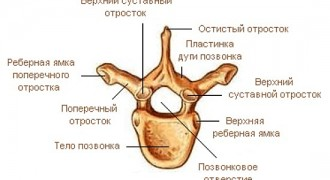
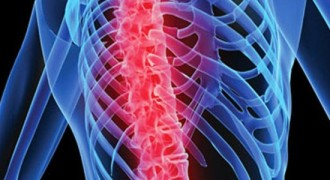
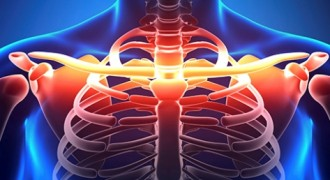
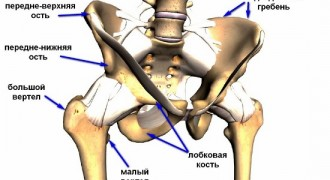
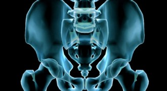
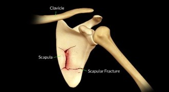

        <div id="middle">
          <div class="centered">


            <div id="sidebar">

              <div class="sitem">

                <form class="search-form" action="http://operelome.ru/">
                  <div class="search-right">
                    <input class="search-button" type="submit" name="" value="Поиск">
                  </div>
                  <div class="search-left">
                    <input class="search-text" type="text" name="s" value="" placeholder="Введите запрос..." required="required">
                  </div>
                </form>
              </div>

              <div class="sitem">

                <a href="http://operelome.ru/zadat-vopros" class="bordered-button bordered-button-doctor">
                  <span>
                    <strong>Задать вопрос
                      <br> травматологу</strong>
                  </span>
                </a>

                <a href="http://operelome.ru/poisk-travmpunkta" class="bordered-button bordered-button-map">
                  <span>
                    <strong>Поиск
                      <br> травмпунктов</strong>
                  </span>
                </a>
              </div>

              <div class="sitem">

                <div class="stitle">Вопросы врачу-травматологу</div>
                <div class="block1">
                  <div class="block1-inner block1-inner-small">

                    <ul class="questions-list-small">
                      <li><a href="http://operelome.ru/vopros/posle-pereloma-lonnoy-kosti-nachalis-silnyie-boli">После перелома лонной кости начались сильные боли?</a></li>
                      <li><a href="http://operelome.ru/vopros/posle-seansa-magnitoterapii-nachinayutsya-rezkie-boli-v-oblasti-pereloma-klyuchitsyi">После сеанса магнитотерапии начинаются резкие боли в области перелома ключицы</a></li>
                      <li><a href="http://operelome.ru/vopros/perelom-pozvonka-1-y-stepeni-mozhno-li-vstavat">Перелом позвонка 1-й степени — можно ли вставать?</a></li>
                      <li><a href="http://operelome.ru/vopros/byil-perelom-pozvonkov-vozmut-li-v-armiyu-pri-takom-diagnoze">Был перелом позвонков — возьмут ли в армию при таком диагнозе?</a></li>
                      <li><a href="http://operelome.ru/vopros/iz-za-skolioza-noshu-korset-mozhno-li-v-nem-katatsya-na-skeyte">Из-за сколиоза ношу корсет, можно ли в нем кататься на скейте?</a></li>
                      <li><a href="http://operelome.ru/vopros/nuzhna-li-operatsiya-pri-kompressionnom-i-vzryivnom-perelomah-pozvonkov">Нужна ли операция при компрессионном и взрывном переломах позвонков?</a></li>
                    </ul>

                    <div class="text-right" style="margin-top: 10px;">
                      <a class="btn-filled btn-filled-small" href="http://operelome.ru/vopros" title="">Все вопросы</a>
                    </div>

                  </div>
                </div>
              </div>


              <div class="spongebob spongebob-sidebar">

                <script async="" src="http://pagead2.googlesyndication.com/pagead/js/adsbygoogle.js"></script>
                <!-- operelomekvadrat -->
                <ins class="adsbygoogle" style="display: none !important; width: 300px; height: 250px;" data-ad-client="ca-pub-8497001485260533" data-ad-slot="9363001408"></ins>
                <script>
                  (adsbygoogle = window.adsbygoogle || []).push({});
                </script>

              </div>
              <div class="sitem">
                <div class="stitle">Наши партнеры</div>
                <div class="block2 block-partners">
                  <a href="http://www.comnews-conferences.ru/it2015" title="" target="_blank">
                    
                  </a>
                  <a href="https://www.aptekaexpo.ru/" title="" target="_blank">
                    
                  </a>
                </div>
              </div>

            </div>
            <div id="content">

              <div class="breadcrumbs" xmlns:v="http://rdf.data-vocabulary.org/#"><a href="http://operelome.ru/" rel="v:url" property="v:title">О переломе</a> »
                <span class="current">Корпус</span>
              </div>
              <div class="category-description formatted">
                <p>Нарушение костной целостности в области корпуса является серьезным патологическим состоянием, при обнаружении признаков которого следует немедленно обратиться за медицинской помощью. По статистике, пятьдесят процентов от всех случаев приходятся
                  на позвоночный отдел, сорок на грудной и около десяти процентов — на шейный. </p>
                <p>Каждый из вышеперечисленных видов перелома может возникнуть вследствие перенесенных травм или превышения уровня допустимой нагрузки на тот или иной участок скелета. Так же известны случаи и так называемых «врожденных» переломов, возникающих из-за
                  наследственных заболеваний скелета. </p>
              </div>


              <div class="short-wrapper">

                <div class="short" id="short-2572">
                  <div class="short-inner">
                    <div class="img">
                      <a href="http://operelome.ru/korpus/2572-perelom-otrostka-pozvonochnika" title="Перелом отростка позвоночника">
                        
                        <span>Перелом отростка позвоночника</span>
                      </a>
                    </div>
                    <div class="text">Переломы позвоночника составляют примерно 0.5% от всех переломов костей скелета. При некоторых травмах у человека происходит повреждение поперечного или остистого отростков ...</div>
                  </div>
                </div>
                <div class="short" id="short-2554">
                  <div class="short-inner">
                    <div class="img">
                      <a href="http://operelome.ru/korpus/2554-perelom-grudnogo-otdela-pozvonochnika" title="Перелом грудного отдела позвоночника">
                        
                        <span>Перелом грудного отдела позвоночника</span>
                      </a>
                    </div>
                    <div class="text">Перелом грудного отдела позвоночника является остро возникшим состоянием, которое характеризуется нарушением анатомической целостности одного или нескольких грудных позвонков (Th1 ...</div>
                  </div>
                </div>
                <div class="short" id="short-1852">
                  <div class="short-inner">
                    <div class="img">
                      <a href="http://operelome.ru/korpus/1852-perelom-klyuchitsyi-so-smeshheniem" title="Перелом ключицы со смещением">
                        
                        <span>Перелом ключицы со смещением</span>
                      </a>
                    </div>
                    <div class="text">Перелом ключицы со смещением является достаточно распространенной травмой. По статическим данным переломы ключицы встречаются в 2.5-15% случаев среди всех переломов. Механизм ...</div>
                  </div>
                </div>
                <div class="short" id="short-1832">
                  <div class="short-inner">
                    <div class="img">
                      <a href="http://operelome.ru/korpus/1832-perelom-lonnoy-kosti-taza" title="Перелом лонной (лобковой) кости таза">
                        
                        <span>Перелом лонной (лобковой) кости таза</span>
                      </a>
                    </div>
                    <div class="text">Переломы костей таза являются очень опасной травмой. Одним из видов повреждения тазовых костей является перелом лонной кости. Анатомия Лонная или лобковая кость относится к ...</div>
                  </div>
                </div>
                <div class="short" id="short-1814">
                  <div class="short-inner">
                    <div class="img">
                      <a href="http://operelome.ru/korpus/1814-perelom-kostey-taza" title="Перелом костей таза">
                        
                        <span>Перелом костей таза</span>
                      </a>
                    </div>
                    <div class="text">В травматологии переломы костей таза составляют 0.5% случаев от всех травм скелета. Частота встречаемости переломов различных тазовых костей неодинаковая. Чаще всего при травме ...</div>
                  </div>
                </div>
                <div class="short" id="short-1628">
                  <div class="short-inner">
                    <div class="img">
                      <a href="http://operelome.ru/korpus/1628-perelom-lopatki" title="Перелом лопатки">
                        
                        <span>Перелом лопатки</span>
                      </a>
                    </div>
                    <div class="text">Лопатка - это плоская парная кость. Она располагается на задней поверхности грудной клетки, сбоку от позвоночного столба (в верхней половине туловища). Эта кость входит в состав ...</div>
                  </div>
                </div>
              </div>

              <div class="navigation">
                <a href="http://operelome.ru/korpus/page/2">Следующая страница »</a> </div>


            </div>

            <div class="clear"></div>
